The sfnetworks package contains the sfnetwork class to represent spatial networks in R. There are several ways in which you can create instances of this class. This vignette describes these ways, and provides more detail on the ins and outs of the data structure.
The sfnetwork class
Spatial networks in sfnetworks are represented by objects of class sfnetwork. These objects inherit the tbl_graph class from tidygraph, which in turn inherit the igraph class from igraph. What this means is that in their core they are designed to store graph structures. However, thanks to the design of tidygraph, they look like a collection of two flat tables: one for the nodes, and one for the edges. In the documentation of tidygraph, this design choice is explained as follows.
Relational data cannot in any meaningful way be encoded as a single tidy data frame. On the other hand, both node and edge data by itself fits very well within the tidy concept as each node and edge is, in a sense, a single observation. Thus, a close approximation of tidyness for relational data is two tidy data frames, one describing the node data and one describing the edge data.
Since the sfnetwork class inherits the tbl_graph class, it shares the same philosophy. However, it extends it into the domain of geospatial data analysis, where each observation has a location in geographical space. For that, it brings sf into the game. An object of class sf stores the geographical coordinates of each observation in standardized format in a geometry list-column, which has a coordinate reference system (CRS) associated with it. Thus, in sfnetworks, we re-formulate the last sentence of the paragraph above to the following.
A close approximation of tidyness for relational geospatial data is two sf objects, one describing the node data and one describing the edge data.
Structure
Obviously a network is more than just a list of two distinct elements. Nodes and edges are related to each other. The first two columns of the edges table are always named from and to and contain integer indices of the source and target node of each edge. These integer indices correspond to rownumbers in the nodes table. That is, if nodes are filtered, or they order changes, the indices are updated.
The geometries of the nodes and edges should also match. In sfnetworks, the following requirements are specified for a valid geospatial network:
- Nodes should have geometries of type
POINT. - Edges should have geometries of type
LINESTRING. - The endpoints of edge geometries should be spatially equal to their corresponding node geometries.
- Nodes and edge geometries should have the same coordinate reference system and the same coordinate precision.
We do need to make a note here. In a geospatial network, the nodes always have coordinates in geographic space, and thus, can always be described by an sf object. The edges, however, can also be described by only the indices of the nodes at their ends. This still makes them geospatial, because they connect two specific points in space, but the spatial information is not explicitly attached to them. Both representations can be useful. In geolocated social networks, for example, there is often no explicit spatial embedding of edges. In road networks, however, edges are usually not straight lines, and their geometries should be stored explicitly. In sfnetworks both variants are supported: edges can be described by an sf object with their own geometries, but also by a regular tibble without a geometry column. We refer to them as spatially explicit edges and spatially implicit edges, respectively. In most of the documentation, however, we focus on the first type.
The figure below summarizes the structure of sfnetwork objects.

Just like in tbl_graph objects, there is always one element (nodes or edges) in an sfnetwork object that is active. This means that element is the main target of analysis. By default, nodes are the active element when creating a network. The active element can be changed using the activate() verb, which will also change the order in which the elements are printed.
In practice, it all looks as follows. Note that here we create the network from a set of spatial lines, by creating nodes at their endpoints. See the section Creating sfnetwork objects for many more examples on how to create a spatial network.
# Spatially explicit edges.
net = as_sfnetwork(roxel)
net#> # A sfnetwork: 987 nodes and 1215 edges
#> #
#> # A directed multigraph with 9 components and spatially explicit edges
#> #
#> # Dimension: XY
#> # Bounding box: xmin: 7.522595 ymin: 51.94151 xmax: 7.546705 ymax: 51.96119
#> # Geodetic CRS: WGS 84
#> #
#> # Node data: 987 × 1 (active)
#> geometry
#> <POINT [°]>
#> 1 (7.538109 51.95286)
#> 2 (7.537867 51.95282)
#> 3 (7.537815 51.95867)
#> 4 (7.537015 51.95848)
#> 5 (7.533441 51.95578)
#> 6 (7.533415 51.95561)
#> # ℹ 981 more rows
#> #
#> # Edge data: 1,215 × 5
#> from to name type geometry
#> <int> <int> <chr> <chr> <LINESTRING [°]>
#> 1 1 2 Hagemanns Kämpken residential (7.538109 51.95286, 7.537867 51.95…
#> 2 3 4 Stiegkamp residential (7.537815 51.95867, 7.537015 51.95…
#> 3 5 6 Havixbecker Straße residential (7.533441 51.95578, 7.533467 51.95…
#> # ℹ 1,212 more rows
# Make edges spatially implicit.
inet = net |>
activate(edges) |>
st_drop_geometry()
inet#> # A sfnetwork: 987 nodes and 1215 edges
#> #
#> # A directed multigraph with 9 components and spatially implicit edges
#> #
#> # Dimension: XY
#> # Bounding box: xmin: 7.522595 ymin: 51.94151 xmax: 7.546705 ymax: 51.96119
#> # Geodetic CRS: WGS 84
#> #
#> # Edge data: 1,215 × 4 (active)
#> from to name type
#> <int> <int> <chr> <chr>
#> 1 1 2 Hagemanns Kämpken residential
#> 2 3 4 Stiegkamp residential
#> 3 5 6 Havixbecker Straße residential
#> 4 7 8 Holzschuhmacherweg residential
#> 5 9 10 Annette-von-Droste-Hülshoff-Straße secondary
#> 6 11 12 NA footway
#> # ℹ 1,209 more rows
#> #
#> # Node data: 987 × 1
#> geometry
#> <POINT [°]>
#> 1 (7.538109 51.95286)
#> 2 (7.537867 51.95282)
#> 3 (7.537815 51.95867)
#> # ℹ 984 more rows
ggraph(net, "sf") +
geom_edge_sf() +
geom_node_sf() +
theme_void()
ggraph(inet, "sf") +
geom_edge_link(linetype = 2) +
geom_node_sf() +
theme_void()
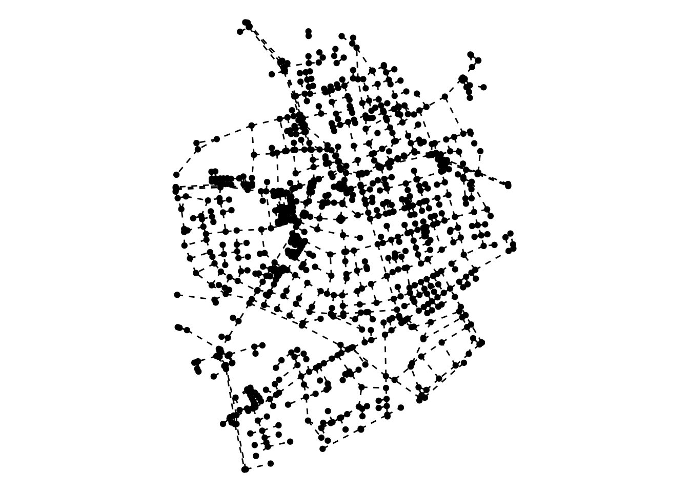
Directionality
With sfnetwork objects it is possible to represent networks with directed edges, and with undirected edges. It is also possible to mimic mixed representations in which both these edge types exist.
Directed networks
By default an instance of the sfnetwork class will be initialized as a directed network. That means that each edge can only be traveled in from the source node to the target node, and not vice versa. In this case, the geometry of the edge always matches the direction, with the startpoint of the line being the location of the source node, and the endpoint of the line the location of the target node.
Undirected networks
The sfnetwork data structure also supports undirected networks. In such networks each edge can be traveled in both directions. Since there is no clear source and target, the node with the lowest index will be referenced in the from column, and the node with the highest index in the to column. The linestring geometry, however, remains unchanged. That is, in undirected networks the specified source node may not always correspond with the startpoint of the edge geometry, but instead with the endpoint. The behavior of ordering the indices comes from igraph and might be confusing, but remember that in undirected networks the terms from and to do not have a meaning and can thus be used interchangeably. If for a computation you really need the edge geometries to match the specified node indices, you can use the utility function make_edges_follow_indices(). This function will reverse edge geometries where needed.
as_sfnetwork(roxel, directed = FALSE)#> # A sfnetwork: 987 nodes and 1215 edges
#> #
#> # An undirected multigraph with 9 components and spatially explicit edges
#> #
#> # Dimension: XY
#> # Bounding box: xmin: 7.522595 ymin: 51.94151 xmax: 7.546705 ymax: 51.96119
#> # Geodetic CRS: WGS 84
#> #
#> # Node data: 987 × 1 (active)
#> geometry
#> <POINT [°]>
#> 1 (7.538109 51.95286)
#> 2 (7.537867 51.95282)
#> 3 (7.537815 51.95867)
#> 4 (7.537015 51.95848)
#> 5 (7.533441 51.95578)
#> 6 (7.533415 51.95561)
#> # ℹ 981 more rows
#> #
#> # Edge data: 1,215 × 5
#> from to name type geometry
#> <int> <int> <chr> <chr> <LINESTRING [°]>
#> 1 1 2 Hagemanns Kämpken residential (7.538109 51.95286, 7.537867 51.95…
#> 2 3 4 Stiegkamp residential (7.537815 51.95867, 7.537015 51.95…
#> 3 5 6 Havixbecker Straße residential (7.533441 51.95578, 7.533467 51.95…
#> # ℹ 1,212 more rowsMixed networks
In sfnetworks there is no native support to represent mixed networks, i.e. networks in which some edges can be traveled in both ways, and others in only one way. However, these type of networks are quite common in some applications of spatial network analysis. For example, road networks in which some streets are oneway streets. By creating a directed network, but duplicating and reversing those edges that should be undirected, you can mimic such a mixed network structure. The morpher to_spatial_mixed() does exactly that. Since some of the network cleaning functions do not work well with duplicated and reversed edges, it is usually a good idea to first create the directed network, clean it, and only then mimic the mixed representation.
# First we mark some streets as oneway.
streets = roxel |>
mutate(oneway = sample(c(TRUE, FALSE), n(), replace = TRUE, prob = c(0.8, 0.2)))
# Check the distribution of oneway vs twoway streets.
streets |>
st_drop_geometry() |>
count(oneway)#> # A tibble: 2 × 2
#> oneway n
#> <lgl> <int>
#> 1 FALSE 236
#> 2 TRUE 979
# Create a directed network.
dnet = as_sfnetwork(streets)
# Check the number of edges in the directed network.
# This equals the total number of streets.
n_edges(dnet)
#> [1] 1215
# Convert it into a mixed network.
# Oneway streets remain directed.
# Twoway streets are duplicated and reversed.
mnet = dnet |>
convert(to_spatial_mixed, directed = oneway)
# Check number of edges in the mixed network.
# This equals the number of oneway streets ...
# ... plus twice the number of twoway streets.
n_edges(mnet)
#> [1] 1451Geometries
What makes sfnetwork objects different from tbl_graph objects is that nodes and (optionally) edges have geometries. These geometries are stored in a geometry list-column, following the design of sf. That also means that just as in sf, these columns are “sticky”, and will survive column subsetting operations.
Extract geometries
Like in sf, you can always extract geometries of the active network element using sf::st_geometry(). The shortcuts st_geometry(x, "nodes") and st_geometry(net, "edges") can be used to extract geometries of a network element, regardless if it is active or not.
net |>
activate(edges) |>
st_geometry()
#> Geometry set for 1215 features
#> Geometry type: LINESTRING
#> Dimension: XY
#> Bounding box: xmin: 7.522595 ymin: 51.94151 xmax: 7.546705 ymax: 51.96119
#> Geodetic CRS: WGS 84
#> First 5 geometries:
#> LINESTRING (7.538109 51.95286, 7.537867 51.95282)
#> LINESTRING (7.537815 51.95867, 7.537015 51.95848)
#> LINESTRING (7.533441 51.95578, 7.533467 51.9557...
#> LINESTRING (7.525977 51.95283, 7.526581 51.95293)
#> LINESTRING (7.532301 51.95559, 7.532214 51.9557...Replace geometries
The other way around, you can also replace geometries using the setter function sf::set_set_geometry() (or alternatively: st_geometry(x) = new). New node geometries are required to be of geometry type POINT, and new edge geometries of geometry type LINESTRING. To preserve the valid spatial network structure, the following is done:
- When replacing node geometries, the endpoints of edge geometries will be replaced as well to match the new node geometries.
- When replacing edge geometries, the endpoints of those geometries are added as new nodes to the network whenever they don’t equal their original location. The original nodes remain in the network even if they are now isolated.
orig_net = as_sfnetwork(mozart, "gabriel")
orig_nodes = st_geometry(orig_net, "nodes")
new_nodes = st_jitter(orig_nodes, 250)
new_net = orig_net |>
st_set_geometry(new_nodes)
ggraph(orig_net, "sf") +
geom_sf(data = new_nodes, color = "orange") +
geom_edge_sf() +
geom_node_sf(color = "darkgrey", size = 4) +
theme_void()
ggraph(new_net, "sf") +
geom_sf(data = orig_nodes, color = "darkgrey") +
geom_edge_sf() +
geom_node_sf(color = "orange", size = 4) +
theme_void()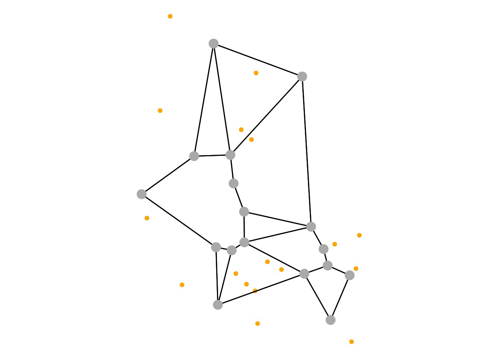
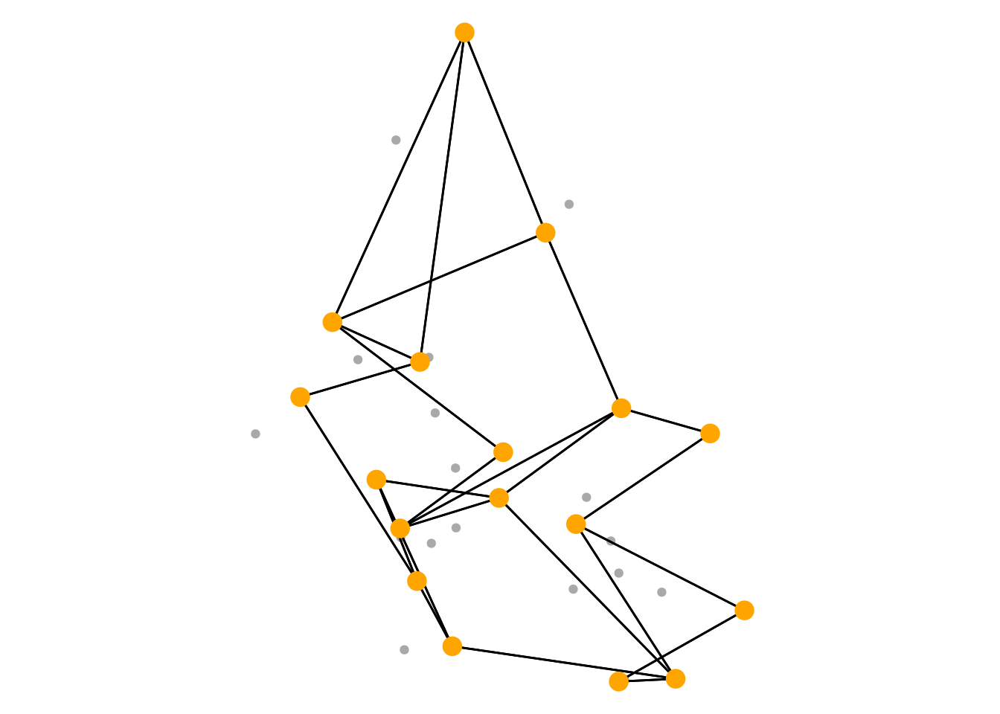
Drop geometries
You can drop geometries using sf::st_drop_geometry() (or alternatively: st_geometry(x) = NULL). As already shown in the previous section, dropping edge geometries will still return a sfnetwork object, but now with spatially implicit instead of spatially explicit edges. Dropping node geometries, however, will return a tbl_graph.
net |>
activate(nodes) |>
st_drop_geometry()#> # A tbl_graph: 987 nodes and 1215 edges
#> #
#> # A directed multigraph with 9 components
#> #
#> # Node Data: 987 × 0 (active)
#> #
#> # Edge Data: 1,215 × 5
#> from to name type geometry
#> <int> <int> <chr> <chr> <LINESTRING [°]>
#> 1 1 2 Hagemanns Kämpken residential (7.538109 51.95286, 7.537867 51.95…
#> 2 3 4 Stiegkamp residential (7.537815 51.95867, 7.537015 51.95…
#> 3 5 6 Havixbecker Straße residential (7.533441 51.95578, 7.533467 51.95…
#> # ℹ 1,212 more rowsBounding box
The area that geometries occupy is bounded by their bounding box. You can use sf::st_bbox() to compute the bounding box of the active element in a sfnetwork object. To compute the bounding box of the full network, use st_network_bbox(). In some cases, the network bounding box may be different than the bounding box of the nodes only.
p1 = st_point(c(1, 0))
p2 = st_point(c(0, 0.5))
p3 = st_point(c(1, 1))
p4 = st_point(c(2, 0.5))
nodes = st_sf(geometry = c(st_sfc(p1), st_sfc(p3), st_sfc(p4)))
edges = st_sf(geometry = st_sfc(st_linestring(c(p1, p2, p3))))
edges$from = 1
edges$to = 2
G = sfnetwork(nodes, edges)
node_bbox = G |>
st_bbox() |>
st_as_sfc()
edge_bbox = G |>
activate(edges) |>
st_bbox() |>
st_as_sfc()
net_bbox = G |>
st_network_bbox() |>
st_as_sfc()
ggraph(G, "sf") +
geom_sf(
data = node_bbox,
color = "#F8766D", fill = NA,
linewidth = 1.5, linetype = 4
) +
geom_sf(
data = edge_bbox,
color = "#619CFF", fill = NA,
linewidth = 1.5, linetype = 4
) +
geom_edge_sf() +
geom_node_sf(size = 4) +
theme_void()
ggraph(G, "sf") +
geom_sf(
data = net_bbox,
color = "orange", fill = NA,
linewidth = 1.5, linetype = 4
) +
geom_edge_sf() +
geom_node_sf(size = 4) +
theme_void()

Coordinate reference system
The coordinates of geometries are always expressed in a specified coordinate reference system (CRS). In a sfnetwork object, the CRS of the node and edge geometries is required to be equal. You can extract the CRS using sf::st_crs(). To transform coordinates into a different CRS, use sf::st_transform(), while specifying for example the EPSG code of the new CRS (other ways of specifying are possible as well, see the documentation of sf).
st_transform(net, 3035)#> # A sfnetwork: 987 nodes and 1215 edges
#> #
#> # A directed multigraph with 9 components and spatially explicit edges
#> #
#> # Dimension: XY
#> # Bounding box: xmin: 4150707 ymin: 3206375 xmax: 4152366 ymax: 3208564
#> # Projected CRS: ETRS89-extended / LAEA Europe
#> #
#> # Node data: 987 × 1 (active)
#> geometry
#> <POINT [m]>
#> 1 (4151782 3207612)
#> 2 (4151765 3207609)
#> 3 (4151784 3208259)
#> 4 (4151728 3208240)
#> 5 (4151472 3207948)
#> 6 (4151470 3207929)
#> # ℹ 981 more rows
#> #
#> # Edge data: 1,215 × 5
#> from to name type geometry
#> <int> <int> <chr> <chr> <LINESTRING [m]>
#> 1 1 2 Hagemanns Kämpken residential (4151782 3207612, 4151765 3207609)
#> 2 3 4 Stiegkamp residential (4151784 3208259, 4151728 3208240)
#> 3 5 6 Havixbecker Straße residential (4151472 3207948, 4151474 3207941,…
#> # ℹ 1,212 more rowsCoordinate precision
Geometries also have a coordinate precision associated with them. This precision does not round the coordinate values, but will be applied during spatial operations. Just as with the CRS, nodes and edges in a sfnetwork object are required to have the same precision. You can extract the precision using sf::st_precision(), and set it using sf::st_set_precision(). Precision values should be specified as a scale factor. For example, to specify 3 decimal places of precision, use a scale factor of 1000. When no precision is specified, it defaults to machine precision. However, in sfnetworks, functions that assess the spatial equality of nodes use a default precision of 1e12 (i.e. 12 decimal places) to speed up processing.
Attribute-geometry relations
Thanks to sf, it is also possible to explicitly specify attribute-geometry relations. These define for each attribute column if the attribute is a constant, an aggregate, or an identity. See here for more information. You can get and set attribute-geometry relations of the active network element with the function sf::st_agr(). For the setter, you can also use the pipe-friendly version sf::st_set_agr(). Note that the to and from columns are not really attributes of edges seen from a network analysis perspective, but they are included in the attribute-geometry relation specification to ensure smooth interaction with sf.
net |>
activate(edges) |>
st_set_agr(c(type = "aggregate")) |>
st_agr()
#> from to name type
#> <NA> <NA> constant aggregate
#> Levels: constant aggregate identityCreating sfnetwork objects
There are several ways to create a sfnetwork object, which are discussed in more detail below.
From node and edge tables
The most basic way to create a sfnetwork object is to provide ready-to-use node and edge tables to the sfnetwork() construction function. Remember that the nodes should be an sf object with POINT geometries, while the first two columns in the edges table are required to be named from and to and contain the rownumbers of the nodes at the start and end of each edge. If the edges are spatially explicit, and hence, also have geometries, these should be of type LINESTRING and their endpoints should equal the locations of their source and target nodes. The construction function will check if the provided input meets these criteria. If you are already sure your data forms a valid spatial network, you can set force = TRUE.
p1 = st_point(c(6, 52))
p2 = st_point(c(8, 53))
p3 = st_point(c(8, 51))
l1 = st_linestring(c(p1, p2))
l2 = st_linestring(c(p2, p3))
l3 = st_linestring(c(p3, p1))
edges = st_sf(geometry = st_sfc(l1, l2, l3), crs = 4326)
nodes = st_sf(geometry = st_sfc(p1, p2, p3), crs = 4326)
edges$from = c(1, 2, 3)
edges$to = c(2, 3, 1)
net = sfnetwork(nodes, edges)
net#> # A sfnetwork: 3 nodes and 3 edges
#> #
#> # A directed simple graph with 1 component and spatially explicit edges
#> #
#> # Dimension: XY
#> # Bounding box: xmin: 6 ymin: 51 xmax: 8 ymax: 53
#> # Geodetic CRS: WGS 84
#> #
#> # Node data: 3 × 1 (active)
#> geometry
#> <POINT [°]>
#> 1 (6 52)
#> 2 (8 53)
#> 3 (8 51)
#> #
#> # Edge data: 3 × 3
#> from to geometry
#> <int> <int> <LINESTRING [°]>
#> 1 1 2 (6 52, 8 53)
#> 2 2 3 (8 53, 8 51)
#> 3 3 1 (8 51, 6 52)It is also possible to provide nodes that are not an sf object, but can be converted to it. For example, a table with two coordinate columns. Any additional arguments provided to the sfnetwork() construction function will be forwarded to sf::st_as_sf() to convert the provided nodes table into a sf object.
nodes_tbl = tibble(x = c(6, 8, 8), y = c(52, 53, 51))
net = sfnetwork(nodes_tbl, edges, coords = c("x", "y"), crs = 4326)
net#> # A sfnetwork: 3 nodes and 3 edges
#> #
#> # A directed simple graph with 1 component and spatially explicit edges
#> #
#> # Dimension: XY
#> # Bounding box: xmin: 6 ymin: 51 xmax: 8 ymax: 53
#> # Geodetic CRS: WGS 84
#> #
#> # Node data: 3 × 1 (active)
#> geometry
#> <POINT [°]>
#> 1 (6 52)
#> 2 (8 53)
#> 3 (8 51)
#> #
#> # Edge data: 3 × 3
#> from to geometry
#> <int> <int> <LINESTRING [°]>
#> 1 1 2 (6 52, 8 53)
#> 2 2 3 (8 53, 8 51)
#> 3 3 1 (8 51, 6 52)Instead of integers referring to rownumbers in the nodes table, the from and to columns in the edges table can also contain characters that refer to values in a specific node attribute column. The name of that column should than be given as argument node_key. By default, it is assumed the column is named name. Internally, the construction function will convert the character values into integer indices referencing rownumbers.
If your edges do not have geometries, you can still create a network with spatially explicit edges by setting edges_as_lines = TRUE. This will create linestring geometries as straight lines between the source and target nodes.
nodes$type = c("city", "village", "farm")
edges = st_drop_geometry(edges)
edges$from = c("city", "village", "farm")
edges$to = c("village", "farm", "city")
net = sfnetwork(nodes, edges, node_key = "type", edges_as_lines = TRUE)
net#> # A sfnetwork: 3 nodes and 3 edges
#> #
#> # A bipartite simple graph with 1 component and spatially explicit edges
#> #
#> # Dimension: XY
#> # Bounding box: xmin: 6 ymin: 51 xmax: 8 ymax: 53
#> # Geodetic CRS: WGS 84
#> #
#> # Node data: 3 × 2 (active)
#> geometry type
#> <POINT [°]> <chr>
#> 1 (6 52) city
#> 2 (8 53) village
#> 3 (8 51) farm
#> #
#> # Edge data: 3 × 3
#> from to geometry
#> <int> <int> <LINESTRING [°]>
#> 1 1 2 (6 52, 8 53)
#> 2 2 3 (8 53, 8 51)
#> 3 3 1 (8 51, 6 52)
ggraph(net, "sf") +
geom_edge_sf() +
geom_node_sf(aes(color = as.factor(type)), size = 4) +
scale_color_discrete("type") +
theme_void()
From spatial lines
A more common way to create a spatial network is to start with only a set of LINESTRING geometries in sf format. These are assumed to be the edge of the network. Providing this to as_sfnetwork() will automatically call create_from_spatial_lines(). This function creates nodes at the endpoints of the lines. Endpoints that are shared between multiple lines, become a single node in the network.
To determine spatial equality of endpoints, sfnetworks by default uses a 12-digit precision for the coordinates. You can change this by either setting a different precision (see above) or by effectively rounding coordinate values using the utility function st_round().
# Linestring geometries.
roxel#> Simple feature collection with 1215 features and 2 fields
#> Attribute-geometry relationships: constant (2)
#> Geometry type: LINESTRING
#> Dimension: XY
#> Bounding box: xmin: 7.522595 ymin: 51.94151 xmax: 7.546705 ymax: 51.96119
#> Geodetic CRS: WGS 84
#> # A tibble: 1,215 × 3
#> name type geometry
#> <chr> <chr> <LINESTRING [°]>
#> 1 Hagemanns Kämpken residential (7.538109 51.95286, 7.537867 …
#> 2 Stiegkamp residential (7.537815 51.95867, 7.537015 …
#> 3 Havixbecker Straße residential (7.533441 51.95578, 7.533467 …
#> 4 Holzschuhmacherweg residential (7.525977 51.95283, 7.526581 …
#> 5 Annette-von-Droste-Hülshoff-Straße secondary (7.532301 51.95559, 7.532214 …
#> 6 NA footway (7.543404 51.94779, 7.54358 5…
#> 7 Deermannskamp residential (7.537675 51.95689, 7.537904 …
#> 8 Lindenstraße residential (7.539105 51.9504, 7.540105 5…
#> 9 NA NA (7.534875 51.95795, 7.534819 …
#> 10 Annette-von-Droste-Hülshoff-Straße secondary (7.532465 51.95424, 7.532469 …
#> # ℹ 1,205 more rows
# Network.
net = as_sfnetwork(roxel)
net#> # A sfnetwork: 987 nodes and 1215 edges
#> #
#> # A directed multigraph with 9 components and spatially explicit edges
#> #
#> # Dimension: XY
#> # Bounding box: xmin: 7.522595 ymin: 51.94151 xmax: 7.546705 ymax: 51.96119
#> # Geodetic CRS: WGS 84
#> #
#> # Node data: 987 × 1 (active)
#> geometry
#> <POINT [°]>
#> 1 (7.538109 51.95286)
#> 2 (7.537867 51.95282)
#> 3 (7.537815 51.95867)
#> 4 (7.537015 51.95848)
#> 5 (7.533441 51.95578)
#> 6 (7.533415 51.95561)
#> # ℹ 981 more rows
#> #
#> # Edge data: 1,215 × 5
#> from to name type geometry
#> <int> <int> <chr> <chr> <LINESTRING [°]>
#> 1 1 2 Hagemanns Kämpken residential (7.538109 51.95286, 7.537867 51.95…
#> 2 3 4 Stiegkamp residential (7.537815 51.95867, 7.537015 51.95…
#> 3 5 6 Havixbecker Straße residential (7.533441 51.95578, 7.533467 51.95…
#> # ℹ 1,212 more rows
ggplot(roxel) +
geom_sf() +
theme_void()
ggraph(net, "sf") +
geom_edge_sf() +
geom_node_sf() +
theme_void()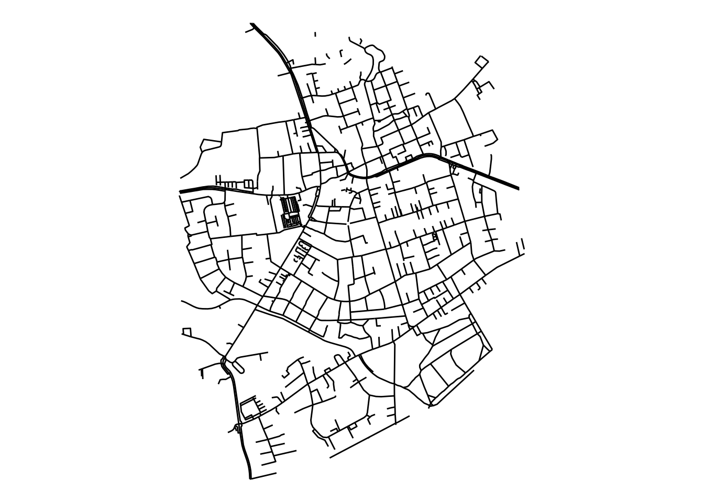

Besides their endpoints, linestring geometries may have interior points that define their shape. It may be that multiple linestrings have interior points at the same location. Since these are not endpoints, they will not become a node in the network. If you also want to add nodes at shared interior points, set subdivide = TRUE, or call the to_spatial_subdivision() morpher after construction. See the vignette on Spatial morphers for details.
From spatial points
It is also possible to create a network from a set of POINT geometries. These are assumed to be the nodes of the network. Providing this to as_sfnetwork() will automatically call create_from_spatial_points(). As a second input it requires an adjacency matrix that specifies which nodes should be connected to each other. Adjacency matrices of networks are matrices with being the number of nodes, and element holding a value if there is an edge from node to node , and a value otherwise.
# Point geometries.
mozart#> Simple feature collection with 17 features and 3 fields
#> Attribute-geometry relationships: constant (3)
#> Geometry type: POINT
#> Dimension: XY
#> Bounding box: xmin: 4548664 ymin: 2747309 xmax: 4549589 ymax: 2748537
#> Projected CRS: ETRS89-extended / LAEA Europe
#> # A tibble: 17 × 4
#> name type website geometry
#> * <chr> <chr> <chr> <POINT [m]>
#> 1 Mozartkino cinema https://www.… (4549504 2747309)
#> 2 Haus für Mozart theatre NA (4549003 2747376)
#> 3 Mozartsteg/Rudolfskai bus_stop NA (4549589 2747507)
#> 4 Mozart Denkmal artwork NA (4549387 2747514)
#> 5 Mozartsteg/Rudolfskai bus_stop NA (4549491 2747551)
#> 6 Mozartsteg bridge NA (4549473 2747624)
#> 7 Mozarts Geburtshaus museum http://www.m… (4549064 2747619)
#> 8 Café Mozart cafe https://www.… (4548994 2747632)
#> 9 Mozartkugel confectionery NA (4549120 2747654)
#> 10 Mozartsteg/Imbergstraße bus_stop NA (4549418 2747723)
#> 11 Spirit of Mozart artwork https://salz… (4549119 2747790)
#> 12 Mozart-Eine Hommage artwork https://salz… (4548664 2747868)
#> 13 Mozarts Wohnhaus apartments NA (4549073 2747916)
#> 14 Universität Mozarteum university NA (4549059 2748042)
#> 15 Stiftung Mozarteum concert_hall NA (4548897 2748037)
#> 16 Hotel Mozart hotel http://www.h… (4549378 2748391)
#> 17 Mozart Studentenheim dormitory NA (4548984 2748537)
# Adjacency matrix.
adj = matrix(c(rep(TRUE, 17), rep(rep(FALSE, 17), 16)), nrow = 17)
# Network.
net = as_sfnetwork(mozart, adj)
net#> # A sfnetwork: 17 nodes and 17 edges
#> #
#> # A bipartite multigraph with 1 component and spatially explicit edges
#> #
#> # Dimension: XY
#> # Bounding box: xmin: 4548664 ymin: 2747309 xmax: 4549589 ymax: 2748537
#> # Projected CRS: ETRS89-extended / LAEA Europe
#> #
#> # Node data: 17 × 4 (active)
#> name type website geometry
#> <chr> <chr> <chr> <POINT [m]>
#> 1 Mozartkino cinema https://www.mozartki… (4549504 2747309)
#> 2 Haus für Mozart theatre NA (4549003 2747376)
#> 3 Mozartsteg/Rudolfskai bus_stop NA (4549589 2747507)
#> 4 Mozart Denkmal artwork NA (4549387 2747514)
#> 5 Mozartsteg/Rudolfskai bus_stop NA (4549491 2747551)
#> 6 Mozartsteg bridge NA (4549473 2747624)
#> # ℹ 11 more rows
#> #
#> # Edge data: 17 × 3
#> from to geometry
#> <int> <int> <LINESTRING [m]>
#> 1 1 1 (4549504 2747309, 4549504 2747309)
#> 2 2 1 (4549003 2747376, 4549504 2747309)
#> 3 3 1 (4549589 2747507, 4549504 2747309)
#> # ℹ 14 more rows
ggplot(mozart) +
geom_sf(size = 4) +
theme_void()
ggraph(net, "sf") +
geom_edge_sf() +
geom_node_sf(size = 4) +
theme_void()

The adjacency matrix can also be provided in sparse form, where for each node the indices of the nodes it is connected to are listed. This allows to directly forward the output of a binary spatial predicate. For example, using sf::st_is_within_distance(), we can connect nodes that are within a given distance from each other.
adj = st_is_within_distance(mozart, dist = set_units(250, "m"))
adj
#> Sparse geometry binary predicate list of length 17, where the predicate
#> was `is_within_distance'
#> first 10 elements:
#> 1: 1, 3, 4, 5
#> 2: 2
#> 3: 1, 3, 4, 5, 6
#> 4: 1, 3, 4, 5, 6, 10
#> 5: 1, 3, 4, 5, 6, 10
#> 6: 3, 4, 5, 6, 10
#> 7: 7, 8, 9, 11
#> 8: 7, 8, 9, 11
#> 9: 7, 8, 9, 11
#> 10: 4, 5, 6, 10
net = as_sfnetwork(mozart, adj)
ggplot(mozart) +
geom_sf(size = 4) +
theme_void()
ggraph(net, "sf") +
geom_edge_sf() +
geom_node_sf(size = 4) +
theme_void()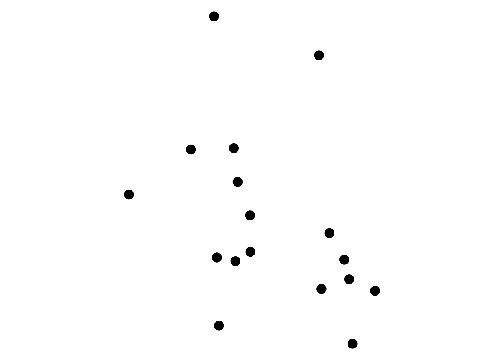
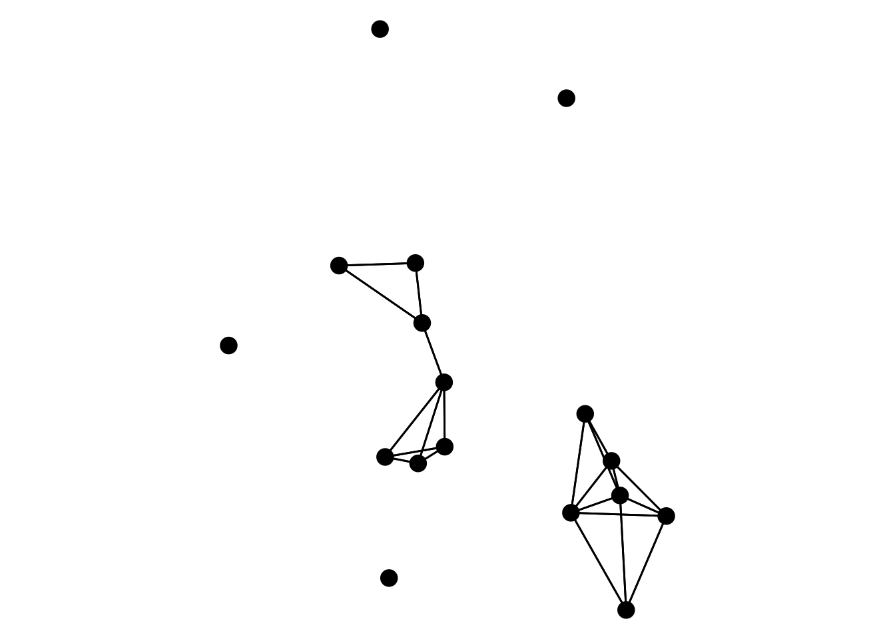
Finally, sfnetworks can create the adjacency matrix internally according to some specified method. In that case, you just need to provide the name of the method. Supported options currently are:
-
complete: All nodes are directly connected to each other. -
sequence: The nodes are sequentially connected to each other, meaning that the first node is connected to the second node, the second node is connected to the third node, etc. -
minimum_spanning_tree: The nodes are connected by their spatial minimum spanning tree, i.e. the set of edges with the minimum total edge length required to connect all nodes. Can also be specified asmst. -
delaunay: The nodes are connected by their Delaunay triangulation. Requires the spdep package to be installed, and assumes planar coordinates. -
gabriel: The nodes are connected as a Gabriel graph. Requires the spdep package to be installed, and assumes planar coordinates. -
relative_neighborhood: The nodes are connected as a relative neighborhood graph. Can also be specified asrn. Requires the spdep package to be installed, and assumes planar coordinates. -
nearest_neighbors: Each node is connected to its nearest neighbors, with being specified through thekargument. By default,k = 1, meaning that the nodes are connected as a nearest neighbor graph. Can also be specified asknn. Requires the spdep package to be installed.
make_ggraph = function(x) {
ggraph(x, "sf") +
geom_edge_sf() +
geom_node_sf(size = 4) +
theme_void()
}
make_ggraph(as_sfnetwork(mozart, "complete"))
make_ggraph(as_sfnetwork(mozart, "sequence"))
make_ggraph(as_sfnetwork(mozart, "mst"))
make_ggraph(as_sfnetwork(mozart, "delaunay"))
make_ggraph(as_sfnetwork(mozart, "gabriel"))
make_ggraph(as_sfnetwork(mozart, "rn"))
make_ggraph(as_sfnetwork(mozart, "knn"))
#> Warning in spdep::knn2nb(spdep::knearneigh(st_geometry(x), k = k), sym =
#> FALSE): neighbour object has 4 sub-graphs
make_ggraph(as_sfnetwork(mozart, "knn", k = 3))
#> Warning in spdep::knn2nb(spdep::knearneigh(st_geometry(x), k = k), sym =
#> FALSE): neighbour object has 2 sub-graphs
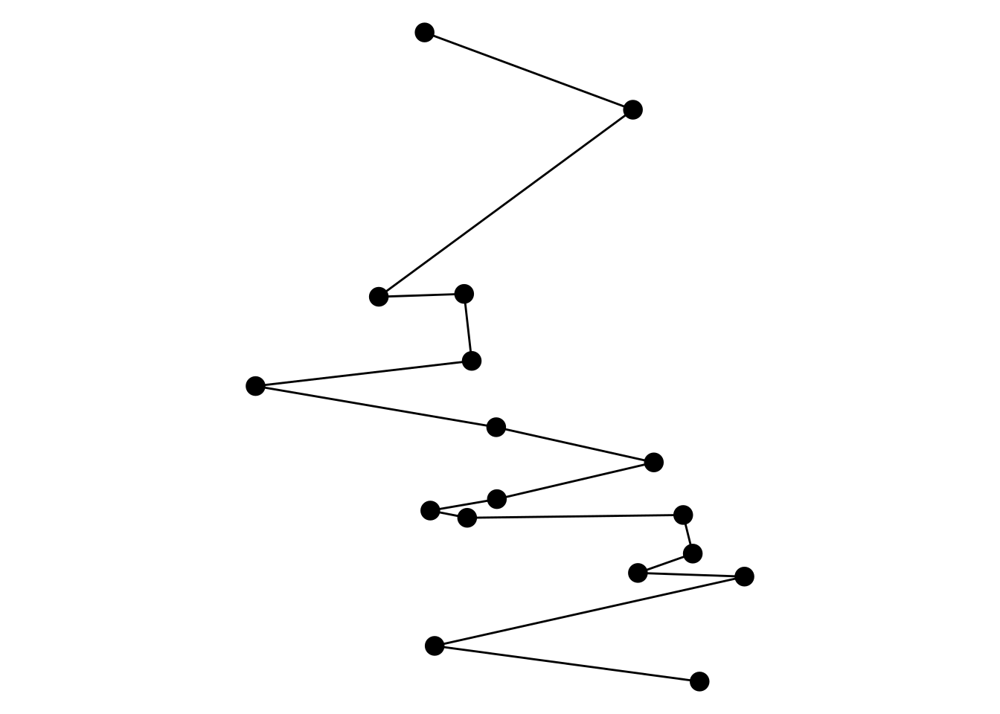

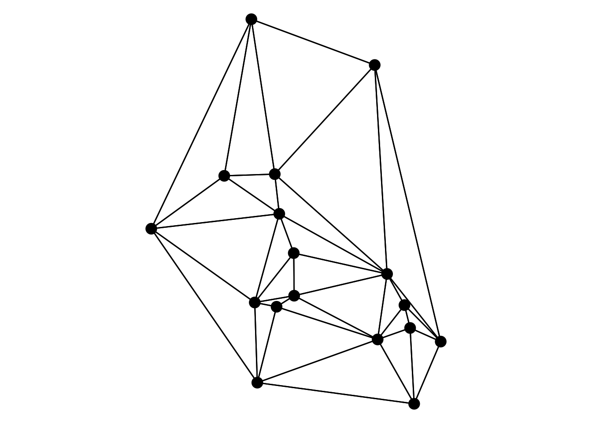
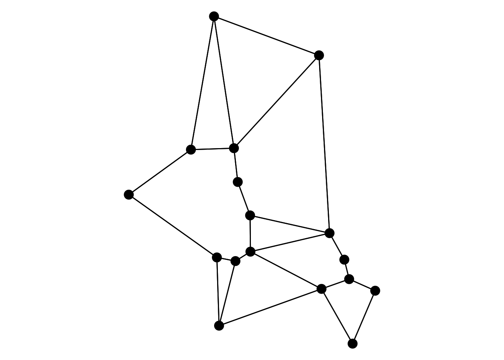
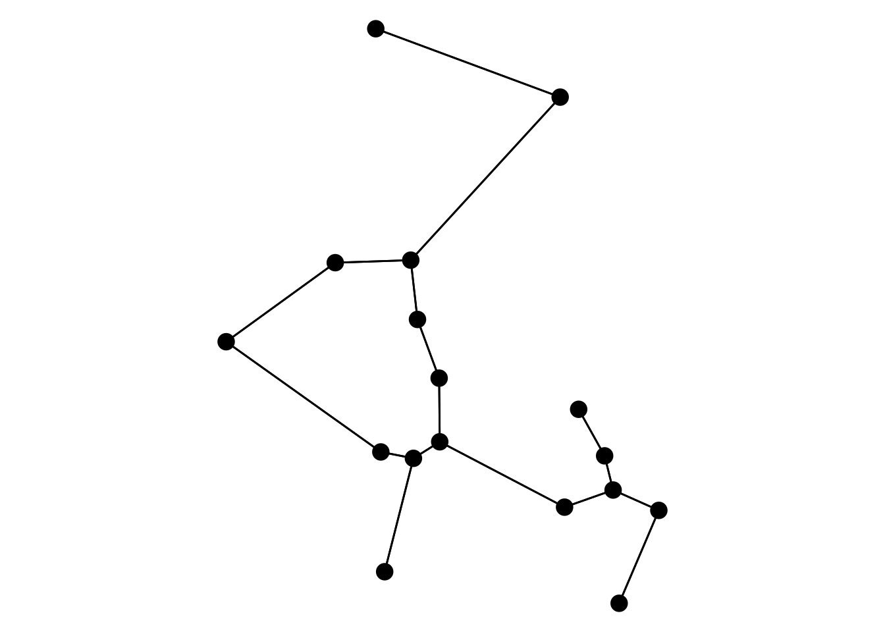
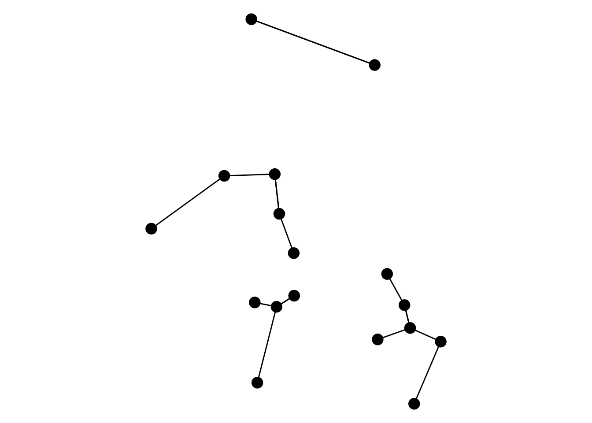

From other network representations
The conversion function as_sfnetwork() can also be used to convert instances of other network classes to a sfnetwork object. This includes classes that are also designed for spatial networks, such as dodgr_streetnet from the dodgr package for routing on street networks, and linnet from the spatstat.linnet package for statistical point pattern analysis on spatial linear networks. However, it can also be used to convert instances of non-spatial network formats, as long as they do specify in some way a spatial location for the nodes. For example, an igraph object with x and y coordinates stored as node attributes. In such a case, any additional arguments provided to as_sfnetwork() will be forwarded to sf::st_as_sf() to convert the nodes of the given network into a sf object.
# igraph object.
inet = igraph::sample_grg(5, 0.5, coords = TRUE)
inet
#> IGRAPH 037109b U--- 5 2 -- Geometric random graph
#> + attr: name (g/c), radius (g/n), torus (g/l), x (v/n), y (v/n)
#> + edges from 037109b:
#> [1] 2--3 4--5
# sfnetwork object.
net = as_sfnetwork(inet, coords = c("x", "y"))
net#> # A sfnetwork: 5 nodes and 2 edges
#> #
#> # An unrooted forest with 3 trees and spatially implicit edges
#> #
#> # Dimension: XY
#> # Bounding box: xmin: 0.111582 ymin: 0.3144644 xmax: 0.9832471 ymax: 0.9943113
#> # CRS: NA
#> #
#> # Node data: 5 × 1 (active)
#> geometry
#> <POINT>
#> 1 (0.111582 0.968579)
#> 2 (0.3840216 0.4292271)
#> 3 (0.8146119 0.3144644)
#> 4 (0.8447424 0.9943113)
#> 5 (0.9832471 0.9893714)
#> #
#> # Edge data: 2 × 2
#> from to
#> <int> <int>
#> 1 2 3
#> 2 4 5From files
There are currently no functions in sfnetworks for reading and writing data (there are some ideas). However, you can use sf::st_read() for spatial file formats to read in points and/or lines, and then construct a network using sfnetwork() (as described here) or as_sfnetwork() (as described here for lines and here for points). For network specific file types, you can use igraph::read_graph() to read the data into R, and then convert it to spatial network format using as_sfnetwork() as long as the required spatial information is present (see here).
A common format of the latter category is GraphML. An example of such a file can be found here, containing the power grid of The Netherlands. After reading it using igraph, we will first convert it to a tbl_graph such that we can easily explore the data.
url = "https://raw.githubusercontent.com/ComplexNetTSP/Power_grids/v1.0.0/Countries/Netherlands/graphml/Netherlands_highvoltage.graphml"
igraph::read_graph(url, format = "graphml") |>
as_tbl_graph()#> # A tbl_graph: 91 nodes and 101 edges
#> #
#> # An undirected simple graph with 2 components
#> #
#> # Node Data: 91 × 14 (active)
#> netcapacity typ wktsrid4326 lat voltage frequency ngen operator lon
#> <chr> <chr> <chr> <chr> <chr> <chr> <chr> <chr> <chr>
#> 1 "" substat… SRID=4326;… 52.3… 110000 "" "" "TenneT" 6.67…
#> 2 "" substat… SRID=4326;… 52.2… 110000 "" "" "" 6.83…
#> 3 "" substat… SRID=4326;… 53.4… 220000 "" "" "TenneT" 6.86…
#> 4 "" joint SRID=4326;… 53.2… 220000… "50;50;5… "" "TenneT" 6.47…
#> 5 "" joint SRID=4326;… 51.4… 150000… "50;50;5… "" "TenneT" 5.62…
#> 6 "" joint SRID=4326;… 52.4… 150000… "50;50;5… "" "TenneT" 4.87…
#> 7 "" joint SRID=4326;… 52.4… 380000… "50;50;5… "" "TenneT" 4.87…
#> 8 "" substat… SRID=4326;… 52.4… 380000… "" "" "TenneT" 4.87…
#> 9 "" substat… SRID=4326;… 51.8… 380000 "" "" "TenneT" 4.26…
#> 10 "" substat… SRID=4326;… 51.6… 380000… "" "" "TenneT" 5.91…
#> # ℹ 81 more rows
#> # ℹ 5 more variables: ref <chr>, source <chr>, name <chr>, capacity <chr>,
#> # id <chr>
#> #
#> # Edge Data: 101 × 18
#> from to rohmkm cables wktsrid4326 operator type lengthm voltage frequency
#> <int> <int> <chr> <chr> <chr> <chr> <chr> <chr> <chr> <chr>
#> 1 1 52 "" 6;3;3… SRID=4326;… "" line 49125.… 380000… 50
#> 2 1 21 "" 3;3;3… SRID=4326;… "TenneT" line 7653.0… 110000… 50;50
#> 3 2 23 "" 6;6 SRID=4326;… "TenneT" line 6135.3… 380000… 50
#> # ℹ 98 more rows
#> # ℹ 8 more variables: cnfkm <chr>, fromrelation <chr>, ref <chr>, name <chr>,
#> # xohmkm <chr>, wires <chr>, ithmaxa <chr>, lid <chr>We can see that the spatial geometries of nodes and edges are stored as WKT strings in columns named wktsrid4326. Remember that additional arguments to as_sfnetwork() for igraph objects are forwarded to sf::st_as_sf() to convert the nodes into a sf object. This makes conversion into a sfnetwork object as easy as:
net = igraph::read_graph(url, format = "graphml") |>
as_sfnetwork(wkt = "wktsrid4326", crs = 4326) |>
rename(geometry = wktsrid4326)
net#> # A sfnetwork: 91 nodes and 101 edges
#> #
#> # An undirected simple graph with 2 components and spatially implicit edges
#> #
#> # Dimension: XY
#> # Bounding box: xmin: 3.692428 ymin: 51.14805 xmax: 7.041048 ymax: 53.44424
#> # Geodetic CRS: WGS 84
#> #
#> # Node data: 91 × 14 (active)
#> netcapacity typ geometry lat voltage frequency ngen
#> <chr> <chr> <POINT [°]> <chr> <chr> <chr> <chr>
#> 1 "" substation (6.679331 52.32104) 52.3210417… 110000 "" ""
#> 2 "" substation (6.830673 52.2139) 52.2139014… 110000 "" ""
#> 3 "" substation (6.869683 53.42999) 53.4299869… 220000 "" ""
#> 4 "" joint (6.474364 53.21321) 53.2132104… 220000… "50;50;5… ""
#> 5 "" joint (5.621211 51.45516) 51.4551594… 150000… "50;50;5… ""
#> 6 "" joint (4.873691 52.42842) 52.4284153… 150000… "50;50;5… ""
#> # ℹ 85 more rows
#> # ℹ 7 more variables: operator <chr>, lon <chr>, ref <chr>, source <chr>,
#> # name <chr>, capacity <chr>, id <chr>
#> #
#> # Edge data: 101 × 18
#> from to rohmkm cables wktsrid4326 operator type lengthm voltage frequency
#> <int> <int> <chr> <chr> <chr> <chr> <chr> <chr> <chr> <chr>
#> 1 1 52 "" 6;3;3… SRID=4326;… "" line 49125.… 380000… 50
#> 2 1 21 "" 3;3;3… SRID=4326;… "TenneT" line 7653.0… 110000… 50;50
#> 3 2 23 "" 6;6 SRID=4326;… "TenneT" line 6135.3… 380000… 50
#> # ℹ 98 more rows
#> # ℹ 8 more variables: cnfkm <chr>, fromrelation <chr>, ref <chr>, name <chr>,
#> # xohmkm <chr>, wires <chr>, ithmaxa <chr>, lid <chr>However, this did only affect the nodes table (since that one is required to have geometries). The edges do not have explicit geometries yet. Using the morpher function to_spatial_explicit(), we can “explicitize” the edge geometries of the constructed network. Also here, additional arguments are forwarded to sf::st_as_sf().
net = net |>
convert(to_spatial_explicit, wkt = "wktsrid4326", crs = 4326, .clean = TRUE) |>
activate(edges) |>
rename(geometry = wktsrid4326)
net#> # A sfnetwork: 91 nodes and 101 edges
#> #
#> # An undirected simple graph with 2 components and spatially explicit edges
#> #
#> # Dimension: XY
#> # Bounding box: xmin: 3.692428 ymin: 51.14805 xmax: 7.041048 ymax: 53.44424
#> # Geodetic CRS: WGS 84
#> #
#> # Edge data: 101 × 18 (active)
#> from to rohmkm cables geometry operator type lengthm
#> <int> <int> <chr> <chr> <LINESTRING [°]> <chr> <chr> <chr>
#> 1 1 52 "" 6;3;3;3;3 (6.188921 52.53048, 6.67… "" line 49125.…
#> 2 1 21 "" 3;3;3;3;6… (6.768035 52.27755, 6.67… "TenneT" line 7653.0…
#> 3 2 23 "" 6;6 (6.830673 52.2139, 6.760… "TenneT" line 6135.3…
#> 4 2 13 "" 6;6 (6.830673 52.2139, 6.888… "" line 4296.2…
#> 5 3 53 "" 6 (6.869683 53.42999, 6.87… "" line 388.82…
#> 6 3 70 "" 6 (6.869683 53.42999, 6.85… "" line 359.61…
#> # ℹ 95 more rows
#> # ℹ 10 more variables: voltage <chr>, frequency <chr>, cnfkm <chr>,
#> # fromrelation <chr>, ref <chr>, name <chr>, xohmkm <chr>, wires <chr>,
#> # ithmaxa <chr>, lid <chr>
#> #
#> # Node data: 91 × 14
#> netcapacity typ geometry lat voltage frequency ngen
#> <chr> <chr> <POINT [°]> <chr> <chr> <chr> <chr>
#> 1 "" substation (6.679331 52.32104) 52.3210417… 110000 "" ""
#> 2 "" substation (6.830673 52.2139) 52.2139014… 110000 "" ""
#> 3 "" substation (6.869683 53.42999) 53.4299869… 220000 "" ""
#> # ℹ 88 more rows
#> # ℹ 7 more variables: operator <chr>, lon <chr>, ref <chr>, source <chr>,
#> # name <chr>, capacity <chr>, id <chr>
ggraph(net, "sf") +
geom_edge_sf() +
geom_node_sf(size = 4) +
theme_void()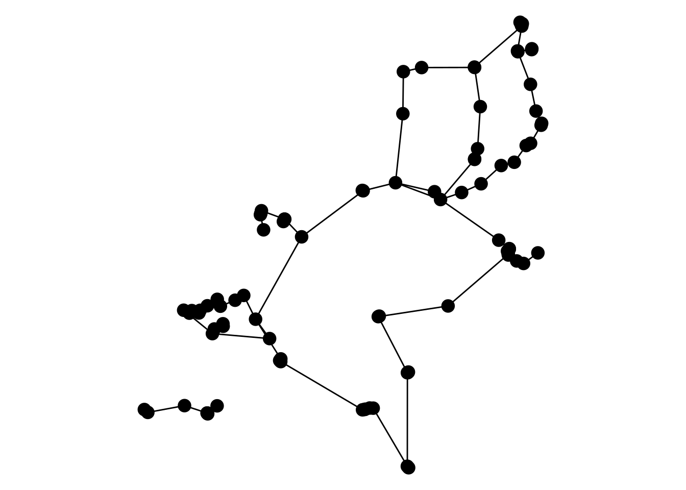
From OpenStreetMap data
A common source for spatial network data is OpenStreetMap.This is an open and collaborative geographic database. It can be used for example to extract geometries of streets or rivers anywhere in the world. In R, there are two main packages that allow to read OpenStreetMap data:
- The osmdata package provides an interface to the Overpass API of OpenStreetMap.
- The osmextract package can read OpenStreetMap data from
osm.pbffiles.
For small areas and few repeated calls, the Overpass API is the easiest way to get the data. However, if your area of interest is large, or you want to load the data many times, it is preferred to not overload the API and read from osm.pbf files instead. Geofabrik is one of the platforms where you can download such files for many different regions in the world.
Here, we will show a small example using osmdata. We can read in the street centerlines of Anif, a small village in Austria, as shown below. For details on this workflow, check the osmdata documentation.
library(osmdata)
#> Data (c) OpenStreetMap contributors, ODbL 1.0. https://www.openstreetmap.org/copyright
# Call the Overpass API to extract streets in Anif.
data = opq("Anif, Austria") |>
add_osm_feature(key = "highway") |>
osmdata_sf() |>
osm_poly2line()
# Extract only the linestring geometries from the response.
streets = data$osm_lines |>
select(name, "type" = highway, surface)
streets
#> Simple feature collection with 1781 features and 3 fields
#> Geometry type: LINESTRING
#> Dimension: XY
#> Bounding box: xmin: 13.03806 ymin: 47.71134 xmax: 13.08752 ymax: 47.76715
#> Geodetic CRS: WGS 84
#> First 10 features:
#> name type surface
#> 5205037 Sankt-Leonhard-Straße secondary asphalt
#> 13868047 Christophorusstraße residential <NA>
#> 13868111 Überfuhrstraße unclassified asphalt
#> 16300987 <NA> motorway_link asphalt
#> 16628000 Berchtesgadener Straße primary asphalt
#> 20812716 Ursteinsteg cycleway asphalt
#> 20812718 Tauernradweg path fine_gravel
#> 22767760 <NA> motorway_link asphalt
#> 22767761 <NA> motorway_link asphalt
#> 22767763 <NA> motorway_link asphalt
#> geometry
#> 5205037 LINESTRING (13.05769 47.724...
#> 13868047 LINESTRING (13.08263 47.746...
#> 13868111 LINESTRING (13.08397 47.746...
#> 16300987 LINESTRING (13.0515 47.7375...
#> 16628000 LINESTRING (13.05344 47.739...
#> 20812716 LINESTRING (13.08375 47.725...
#> 20812718 LINESTRING (13.08152 47.731...
#> 22767760 LINESTRING (13.04707 47.741...
#> 22767761 LINESTRING (13.05249 47.738...
#> 22767763 LINESTRING (13.05394 47.740...Now, we can simply create a network out of these lines using as_sfnetwork(), as shown before.
net = as_sfnetwork(streets, directed = FALSE)
net#> # A sfnetwork: 2519 nodes and 1781 edges
#> #
#> # An undirected multigraph with 837 components and spatially explicit edges
#> #
#> # Dimension: XY
#> # Bounding box: xmin: 13.03806 ymin: 47.71134 xmax: 13.08752 ymax: 47.76715
#> # Geodetic CRS: WGS 84
#> #
#> # Node data: 2,519 × 1 (active)
#> geometry
#> <POINT [°]>
#> 1 (13.05769 47.72452)
#> 2 (13.05883 47.72453)
#> 3 (13.08263 47.74633)
#> 4 (13.08086 47.75767)
#> 5 (13.08397 47.74621)
#> 6 (13.0515 47.73759)
#> # ℹ 2,513 more rows
#> #
#> # Edge data: 1,781 × 6
#> from to name type surface geometry
#> <int> <int> <chr> <chr> <chr> <LINESTRING [°]>
#> 1 1 2 Sankt-Leonhard-Straße secondary asphalt (13.05769 47.72452, 13.0…
#> 2 3 4 Christophorusstraße residenti… NA (13.08263 47.74633, 13.0…
#> 3 3 5 Überfuhrstraße unclassif… asphalt (13.08397 47.74621, 13.0…
#> # ℹ 1,778 more rowsHowever, we need to be aware that OpenStreetMap data is not created primarily with a network structure in mind. This means that locations where two streets connect are not always the endpoints of the linestring geometries, but they can be an interior point of such a geometry as well. By setting subdivide = TRUE linestring geometries will be subdivided at places where an interior point is shared between multiple features. In that way, a node will be placed at such locations.
# The create network without subdivision has many disconnected components.
with_graph(net, graph_component_count())
#> [1] 837
# Creating the network with subdivsion reduces this number drastically.
net = as_sfnetwork(streets, subdivide = TRUE)
with_graph(net, graph_component_count())
#> [1] 21
ggraph(net, "sf") +
geom_edge_sf() +
geom_node_sf() +
theme_void()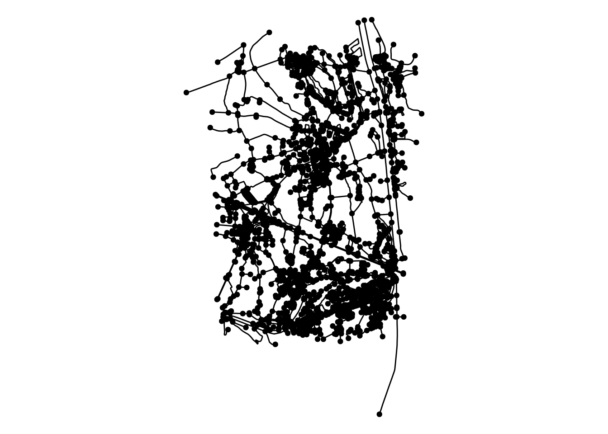
Random networks
The function play_geometric() creates a random geometric graph. This randomly samples nodes, and connects them by an edge if they are within a given distance threshold from each other. By default, sampling will take place on the unit square. However, through the bounds argument you can also provide any spatial feature to sample on. This will use sf::st_sample() internally.
# Sample on a unit square.
neta = play_geometric(10, 0.3)
# Sample on a spatial feature.
netb = play_geometric(20, set_units(250, "m"), bounds = st_bbox(mozart))
ggraph(neta, "sf") +
geom_edge_sf() +
geom_node_sf(size = 4) +
theme_void()
ggraph(netb, "sf") +
geom_edge_sf() +
geom_node_sf(size = 4) +
theme_void()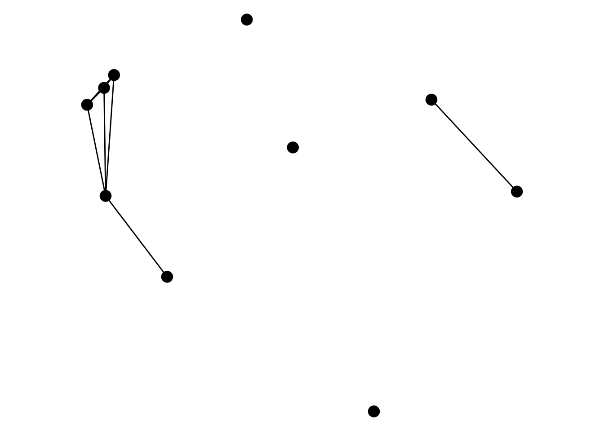
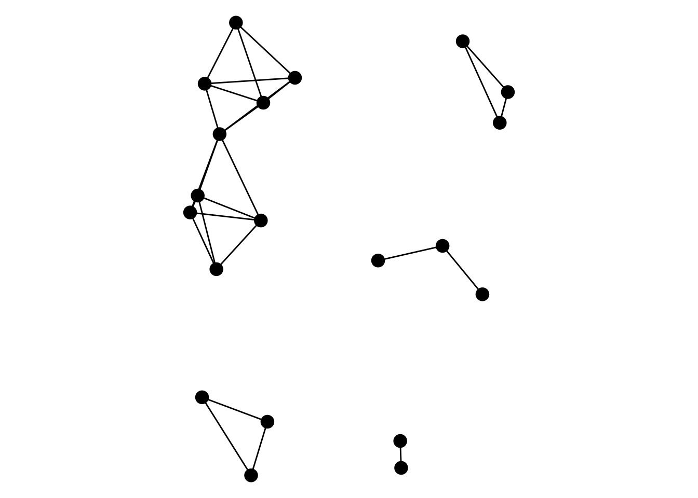
Validating sfnetwork objects
As described in the beginning, there are several requirements for a sfnetwork object to be considered a valid spatial network. The validate_network() utility function checks if these requirements are met.
validate_network(net)
#> → Checking node geometry types ...#> → Checking edge geometry types ...#> → Checking coordinate reference system equality ...#> → Checking coordinate precision equality ...#> → Checking if geometries match ...These checks are executed already during construction. Trying to construct an invalid network will result in an error:
p1 = st_point(c(6, 52))
p2 = st_point(c(8, 53))
p3 = st_point(c(8, 51))
p4 = st_point(c(7, 52.5))
p5 = st_point(c(7, 52))
l1 = st_linestring(c(p2, p4))
l2 = st_linestring(c(p2, p5))
edges = st_sf(geometry = st_sfc(l1, l2), crs = 4326)
nodes = st_sf(geometry = st_sfc(p1, p2, p3), crs = 4326)
edges$from = c(2, 2)
edges$to = c(1, 3)
net = sfnetwork(nodes, edges)
#> → Checking node geometry types ...#> → Checking edge geometry types ...#> → Checking coordinate reference system equality ...#> → Checking coordinate precision equality ...#> → Checking if geometries match ...#> Error in `validate_network()`:
#> ! Node locations do not match edge boundariesHowever, you could work around this by setting force = TRUE. This will skip the checks, and create the sfnetwork object even if its structure is not valid. Be aware that functions in sfnetworks are designed under the assumption that the analyzed network is valid.
net = sfnetwork(nodes, edges, force = TRUE)If your issue is that node and edge geometries do not match (i.e. the endpoints of the edges are not equal to the nodes that are supposed to be their source and target), there is the utility function make_edges_valid() that can fix this in two different ways:
- By default, it will replace each invalid endpoint in an edge geometry with the point geometry of the node that is referenced in the from or to column.
- If you set
preserve_geometries = TRUE, the edge geometries remain unchanged. Invalid endpoints are added as new nodes to the network, and the from and to columns are updated accordingly.
neta = make_edges_valid(net)
netb = make_edges_valid(net, preserve_geometries = TRUE)
ggraph(net, "sf") +
geom_edge_sf() +
geom_node_sf(size = 4) +
theme_void()
ggraph(neta, "sf") +
geom_edge_sf() +
geom_node_sf(size = 4) +
theme_void()
ggraph(netb, "sf") +
geom_edge_sf() +
geom_node_sf(size = 4) +
theme_void()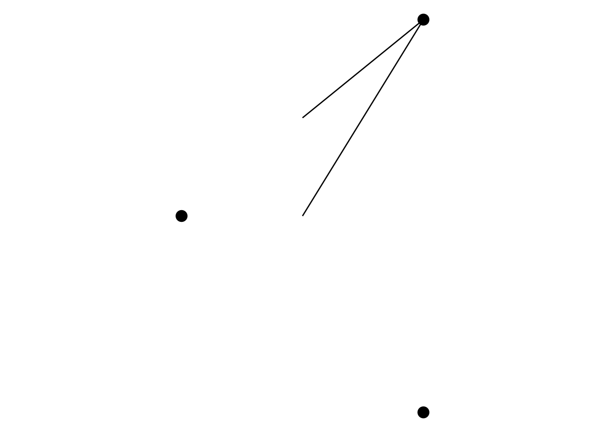
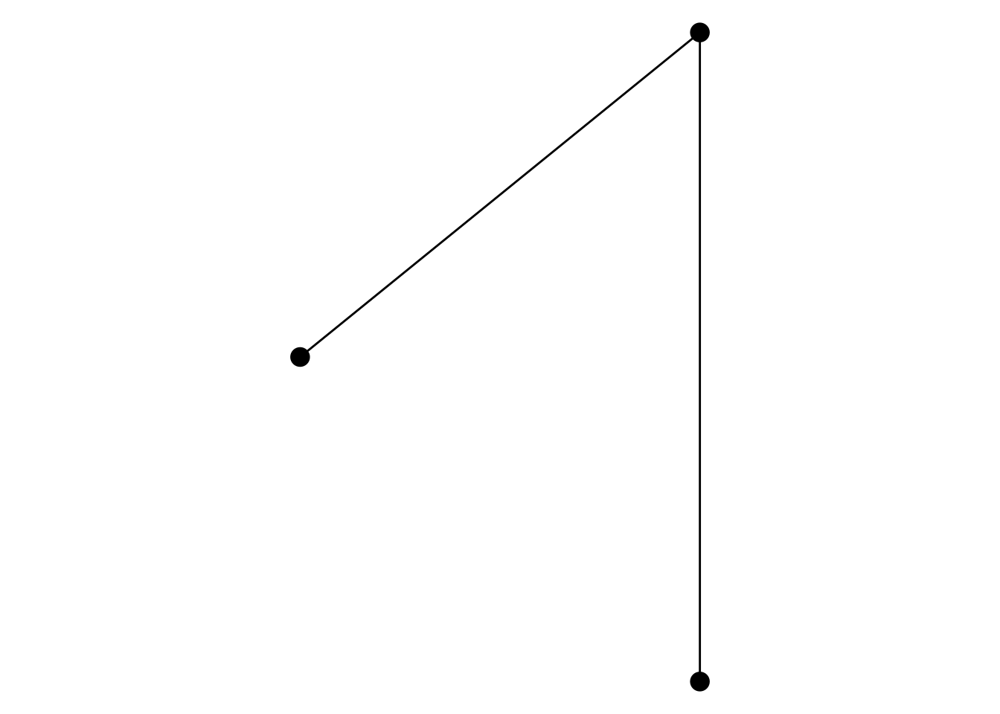
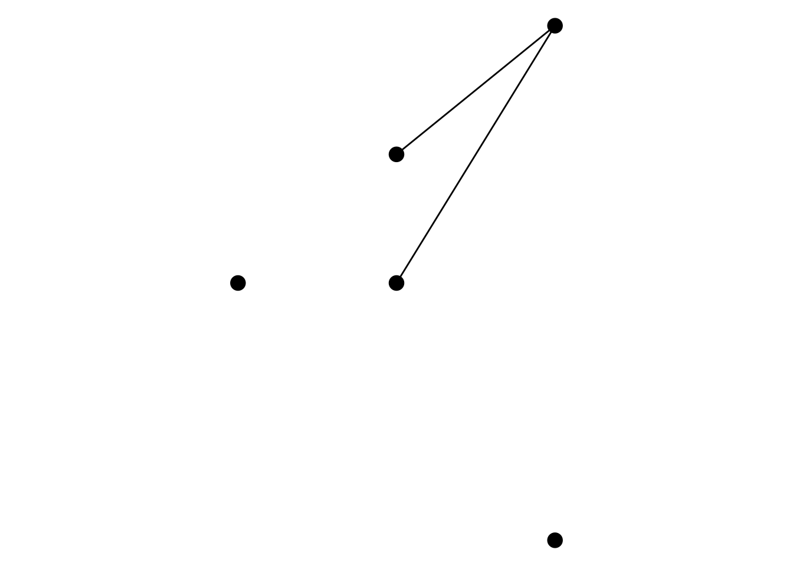